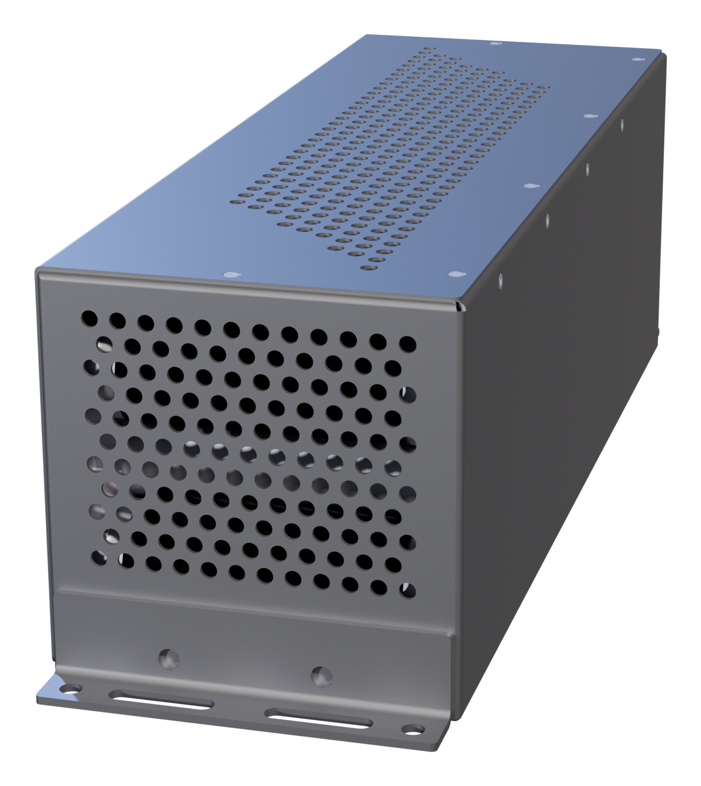

Homepage hero pack, rendered in Blender.
A studio render of the same model the homepage hero uses, built with Blender instead of the live WebGL viewer — camera angle and three-point lighting matched to how the site already lights it.

Full sequence — still, rotate, explode, reassemble.
Still → the camera starts turning → the pack comes apart into layers, still turning → holds exploded through most of a full rotation → comes back together → settles back to still, matching the reference recording of the site's own scroll-scrubbed pack theatre. Explode direction/height per part is ported from home-hero-3d.js's LAYER_TIERS keyword list; the camera's rotation speed eases in and out (zero at both ends) rather than starting or stopping abruptly, and completes exactly one turn so the loop point is seamless.
Scroll-scrubbed — with pinpoint callouts.
The pack theatre pattern the live pack pages use (sc-theatre/sc-callouts, same CSS, same track/stage scroll math), driven by a pre-rendered frame sequence instead of live WebGL. Scroll explodes the pack while the camera turns; once it reaches the callout angle, both freeze and the seven part labels reveal one by one, reading their screen position from a JSON file Blender wrote at render time (world_to_camera_view(), projected through that exact frozen camera). Keep scrolling and the labels clear as the pack reassembles — the camera keeps turning the same direction rather than winding back, so reassembly never reads as the animation rewinding.